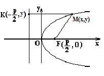

Парабола

Парабола – геометрическое место точек  , равноудалённых от заданной точки
, равноудалённых от заданной точки  (фокус) и от данной прямой (директрисы).
(фокус) и от данной прямой (директрисы).
, равноудалённых от заданной точки (фокус) и от данной прямой (директрисы).
. ,
Каноническое
уравнение параболы
–
каноническое уравнение параболы с вершиной в начале координат,
точка  - вершина;
- вершина;
- вершина;
 - ось параболы;
- ось параболы; точка - фокус;
- фокус;
Уравнение
директрисы параболы
-
уравнение директрисы;
- эксцентриситет;
 - фокальный параметр
(расстояние от фокуса до директрисы или половины хорды, проходящей через фокус
перпендикулярно оси ).
- фокальный параметр
(расстояние от фокуса до директрисы или половины хорды, проходящей через фокус
перпендикулярно оси ).
Каноническое
уравнение параболы со смещенной вершиной
–
каноническое уравнение параболы с вершиной в точке  ;
;
;
Уравнение параболы
в полярных координатах
–
уравнение параболы в полярных координатах, связанных с фокусом;
Параметрическое
уравнение параболы
– параметрические
уравнения параболы.